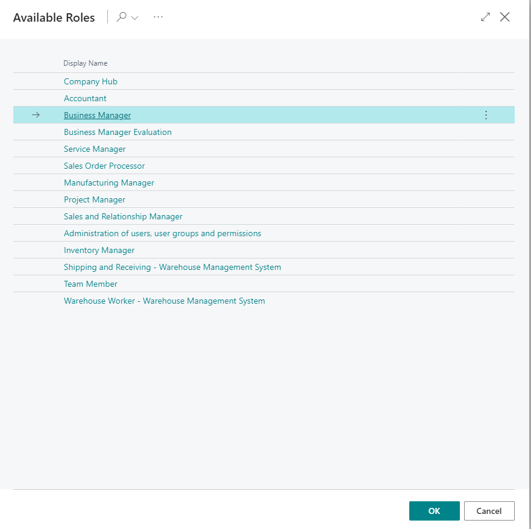
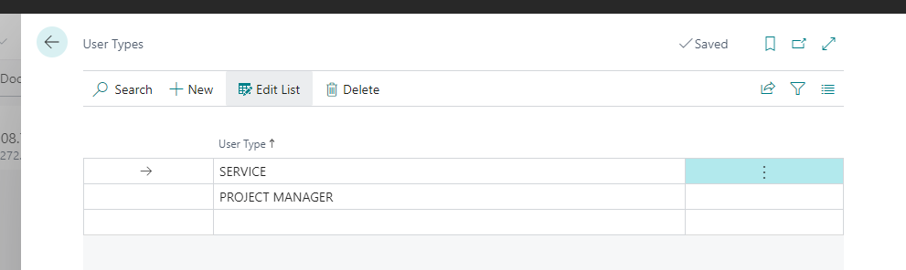
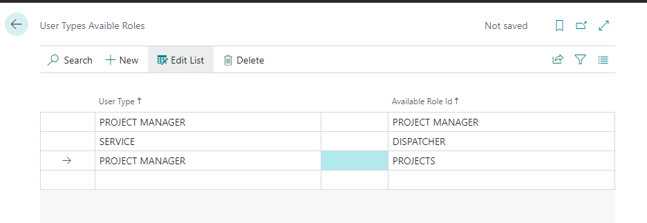
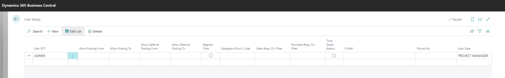
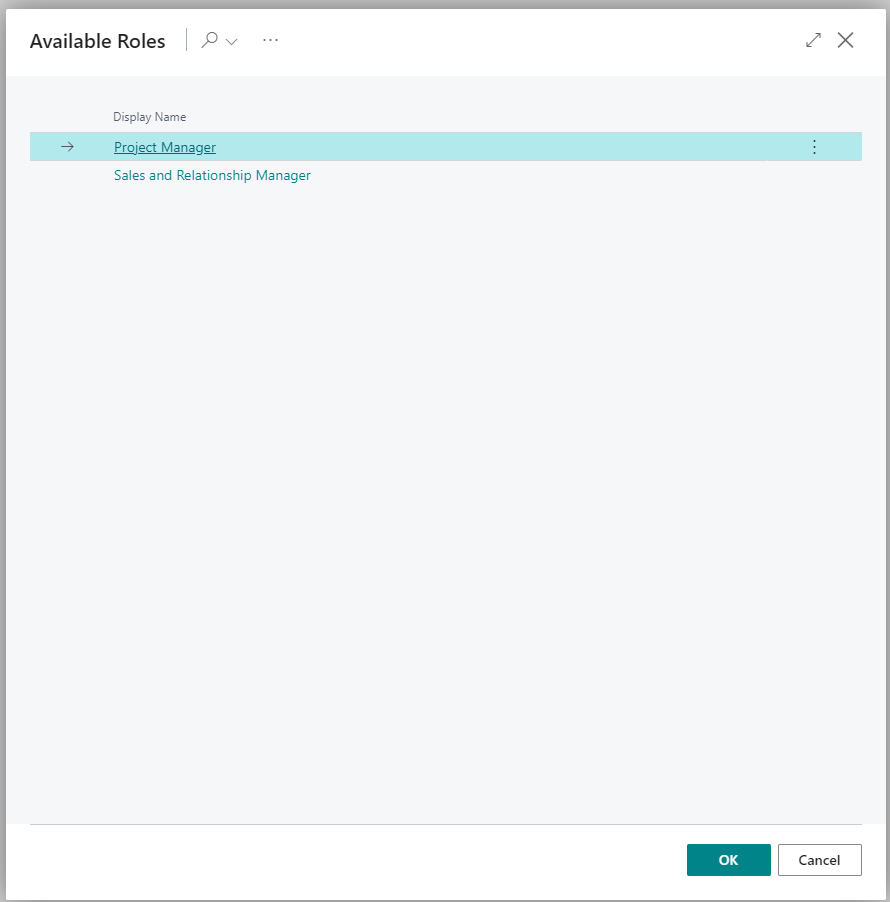

In Business Central there is no way to restrict role selection to users. All users can select between all the available roles.
In standard BC you have these roles:

What if you want to restrict the role selection for some users only to one or two roles?
While i'm sure there are many ways to do it then one way to do it is the following:
- Lets create new table and page called"User Type"
In this table we can define different user types. For example we could create Service and Project Manager user types:

- Now lets create new table and page called"User Types Available Roles"
In this table we can define which user type can see which role centers

- Lets extend table"User Setup" with a new field"User Type"
This way we can say which type of user it is.

- Lets create a page extension which will intervene when user opens Role Selection page.
pageextension 50004 Roles extends Roles
{
trigger OnOpenPage()
var
UserSetup: Record"User Setup";
UserTypeAvailableRoles: Record"User Type Available Role";
RoleFilter: TextBuilder;
NoRolesAvailable: Label 'User Type %1 has no roles available';
begin
if UserSetup.Get(UserId) then begin
UserTypeAvailableRoles.SetRange("User Type", UserSetup."User Type");
if UserTypeAvailableRoles.FindSet(false, false) then
repeat
RoleFilter.Append(UserTypeAvailableRoles."Role Id" + '|');
until UserTypeAvailableRoles.Next() = 0;
if RoleFilter.Length > 0 then begin
RoleFilter.Remove(RoleFilter.Length, 1);
Rec.SetFilter("Profile ID", RoleFilter.ToText());
end else begin
Rec.SetRange("Profile ID", 'null-||' + Format(System.Random(9999)));
Message(NoRolesAvailable, UserSetup."User Type");
end;
end;
end;
}This page extension will go and check User Type from User Setup and from this type will determine which Role Centers are available for this user. If theres no roles assigned to this user type then it will just generate a random filter to show nothing.
Now when Project Manager will open up Role Selection they will see only these roles available to them:

This is not a perfect solution and users can still find pages from the Tell Me function. Also maybe User Groups works better then User Setup for defining the Available Roles for users but this way the role selection can be restricted which is impossible to do out of the box.